화학분석기사(구) (2014-03-02 기출문제)
1과목: 일반화학
1. 0.10M KNO3 용액에 관한 설명으로 옳은 것은?
- 이 용액 0.10L에는 6.0×1023개의 K+ 이온들이 존재한다.
- 이 용액 0.10L에는 1.0몰의 K+ 이온들이 존재한다.
- 이 용액 0.10L에는 0.010몰의 K+ 이온들이 존재한다.
- 이 용액 0.10L에는 6.0×1022개의 K+ 이온들이 존재한다.
(정답률: 90%)

2. 다음 중 수소의 질량 백분율(%)이 가장 큰 것은?
- HCl
- H2O
- H2SO4
- H2S
(정답률: 90%)
3. 다음 물질을 전해질의 세기가 강한 것부터 약해지는 순서로 나열한 것은?
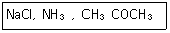
- NaCl＞CH3COCH3＞NH3
- NaCl＞NH3＞CH3COCH3
- CH3COCH3＞NH3＞NaCl
- CH3COCH3＞NaCl＞NH3
(정답률: 89%)
4. 다음 중 산-염기 반응의 쌍이 아닌 것은?
- C2H5OH+HCOOH
- CH3COOH+NaOH
- CO2+NaOH
- H2CO3+Ca(OH)2
(정답률: 56%)
5. 다음 물질을 녹이고자 할 때, 물(H2O)과 사염화탄소(CCl4)중에서 물(H2)에 더욱 잘 녹을 것이라고 예상되는 물질을 모두 나타낸 것은?
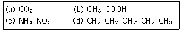
- (a), (b)
- (b), (c)
- (a), (b), (c)
- (b), (c), (d)
(정답률: 91%)
6. 1.00g의 아세탈렌이 완전히 연소할 때 생성되는 이산화탄소의 부피는 표준상태에서 몇 L인가? (단, 모든 기체는 이상기체라 가정한다.)
- 1.225L
- 1.725L
- 2.225L
- 2.725L
(정답률: 81%)
7. 산과 염기에 대한 설명 중 틀린 것은?
- 아레니우스 염기는 물에 녹으면 해리되어 수산화이온을 내놓는 물질이다.
- 아레니우스 산은 물에 녹으면 해리되어 수소이온을 내놓는 물질이다.
- 염기는 리트머스의 색깔을 파란색에서 빨간색으로 변화시킨다.
- 산은 마그네슘, 아연 등의 금속과 반응하여 수소기체를 발생시킨다.
(정답률: 92%)
8. 이소프로필알코올(isopropyl alcohol)을 옳게 나타낸 것은?
- CH3-CH2-OH
- CH3-CH(OH)-CH3
- CH3CH(OH)-CH2-CH3
- CH3CH2-CH2-OH
(정답률: 90%)
9. H2C2O4에서 C의 산화수는?
- +1
- +2
- +3
- +4
(정답률: 88%)
10. 수소연료전지에서 전기를 생산할 때의 반응식이 다음과 같을 때 10g의 H2와 160g의 O2가 반응하여 생성된 물은 몇 그램인가?
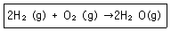
- 90g
- 100g
- 110g
- 120g
(정답률: 88%)
11. 다음 두 반응의 평형상수 K같은 온도가 증가하면 어떻게 되는가?
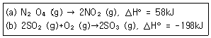
- (a), (b) 모두 증가
- (a), (b) 모두 감소
- (a) 증가, (b) 감소
- (a) 감소, (b) 증가
(정답률: 75%)
12. 원자에 공통적으로 있는 입자이며 단위 음전하를 갖고 가장 가벼운 양성자 질량의 약 1/2000 정도로 매우 작은 질량을 갖는 것은?
- 원자
- 전자
- 미립자
- 중성자
(정답률: 93%)
13. 0.3M의 황산용액 농도를 노르말 농도로 환산하면?
- 0.3N
- 0.6N
- 0.9N
- 1.2N
(정답률: 84%)
14. 다음 중 비금속의 특징이 아닌 것은?
- 전기 전도성을 띄지 않는다.
- 공유결합을 통해 서로 결합할 수 있다.
- 금속과 반응하여 음이온을 형성하려는 경향이 있다.
- 주기율표의 왼쪽 윗부분에 배치되어 있다.
(정답률: 85%)
15. 아스파탐(C14H18N2O5) 7.3g에 들어있는 질소 원자의 개수는 약 얼마인가?
- 3.0×1022
- 1.5×1022
- 7.5×1021
- 3.7×1021
(정답률: 69%)
16. 다음 중에서 격자에너지(lattice energy)가 가장 작은 것은?
- LiF
- KF
- Csl
- NaBr
(정답률: 62%)
17. 다음 원자나 이온 중 3개의 홀전자를 가지는 것은?
- N
- O
- Al
- S2-
(정답률: 84%)
18. 다음 유기 화합물의 명칭 중 틀린 것은?
- CH2=CH2의 중합체는 폴리스티렌이다.
- CH2=CH-CN의 중합체는 폴리아크릴로니트릴이다.
- CH2=CHOCOCH3의 중합체는 폴리아세트산비닐이다.
- CH2=CHCl의 중합체는 폴리염화비닐이다.
(정답률: 79%)
19. 다음 반응에서 평형 이동의 방향이 오른쪽이 아닌 것은?
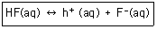
- [HF]의 증가
- [F-]의 감소
- NaOH 첨가
- NaF 첨가
(정답률: 59%)
20. 기체에 대한 설명 중 틀린 것은?
- 동일한 온도 조건에서는 이상기체의 압력과 부피의 곱이 일정하게 유지되며 치를 Boyle의 법칙이라 한다.
- 기체 분자 운동론에 의해 기체의 절대온도는 기체 입자의 평균 운동 에너지의 척도로 나타낼 수 있다.
- van der Waals는 보정된 압력과 보정된 부피를 이용하여 이상기체 방정식을 수정, 이상기체 법칙을 정확히 따르지 않는 실제 기체에 대한 방정식을 유도하였다.
- 기체의 분출(effusion) 속도는 입자 질량의 제곱근을 정비례하여 미를 Graham의 확산법칙이라 한다.
(정답률: 84%)
2과목: 분석화학
21. Agl의 용해도곱은 8.3×10-17이다. 50.0mL의 0.1M I-를 0.⑤0M Ag+-로 적정하였다. Ag+용액을 110.0mL 가했을 때 Ag+의 농도는?
- 0.⑤0M
- 3.1×10-3M
- 5.0×10-10M
- 2.3×10-14M
(정답률: 65%)
22. 다음 전기화학의 기본 개념과 관련한 설명 중 틀린 것은?
- 1주울의 에너지는 1암페어의 전류가 전위차가 1볼트인 점들 사이를 이동할 때 얻거나 잃는 양이다.
- 산화환원 반응(redox reaction)은 전자가 한 화학종에서 다른 화학종으로 옳아가는 것을 의미한다.
- 전지 전압은 전기화학 반응에 대한 자유 에너지 변화에 비례한다.
- 전류는 전기화학 반응의 반응속도에 비례한다.
(정답률: 61%)
23. CaF2로 포화된 0.25M NaF 용액에서 이루어지는 화학븐응이 아닌 것은?
- NaF→Na++F-
- NaF+H2O→NaOH+HF
- F-+H2O↔HF+OH-
- CaF2↔Ca2+2F-
(정답률: 53%)
24. 완충용액은(buffer solution)은 pH 변화를 억제하는 용액이다. 이 때 pH 변화를 얼마나 잘 막는지에 대한 척도로서 사용하는 완충용량(buffer capacity)에 대한 설명으로 맞는 것은?
- 완충용액 1.00을 pH 1단위만큼 변화시킬 수 있는 센 산이나 센 염기의 몰수
- 완충용액의 구성 성분이 약한 1.00L의 pH를 1단위만큼 변화시킬 수 있는 짝염기의 몰수
- 완충용액 1.00L를 pH 1단위만큼 변화시킬 수 있는 약한 산 또는 그의 짝염기 몰수
- 완충용액 중 짝염기에 대한 산의 농도비가 1이 되는데 필요한 약한 산의 몰수
(정답률: 63%)
25. 성분이온 중 한 가지 이상이 용액 중에 들어있는 경우 그 염의 용해도가 감소하는 현상을 공통이온 효과라고 한다. 다음 중 공통이온 효과와 가장 관련이 있는 원리[법칙]는?
- 파울리(Pauli)의 배타원리
- 비어(Beer)의 법칙
- 패러데이(Faraday) 법칙
- 르 샤틀리에(Le Chatelier) 원리
(정답률: 88%)
26. 다음 산화-환원 반응에 대한 설명 중 틀린 것은?
- 산화-환원 반응은 전자가 한 화학종에서 다른 화학종으로 이동하는 반응이다.
- 산화는 전자를 잃는 반응이다.
- 환원제는 다른 화학종으로부터 전자를 받는다.
- 산화-환원 반응에 관계된 전자를 전기회로를 통해 흐르게 하면 측정된 전압과 전류로부터 반응에 대한 정보를 얻을 수 있다.
(정답률: 79%)
27. 0.100M CH3COOH 용액 50.0mL를 0.⑤00M NaOH로 적정 시 가장 적합한 지시약은?
- 메틸오렌지
- 페놀프탈레인
- 브로모크레졸그린
- 메틸레드
(정답률: 84%)
28. 25℃에서 0.⑤0M KCl 수용액의 H+의 활동도는 얼마인가? (단, H+와 OH-의 활동도 계수는 이온세기가 0.⑤M 일 때는 각각 0.86과 0.81이고, 이온세기가 0.10M 일 때는 각각 0.83과 0.76이다.)
- 1.03×10-7
- 1.⑤×10-7
- 1.15×10-7
- 1.20×10-7
(정답률: 42%)
29. 다음 화학평형식에 대한 설명으로 틀린 것은?
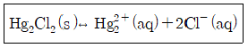
- 이 반응을 나타내는 평형상수는 KSP라고 하며 용해도상수 또는 용해도곱상수라고도 한다.
- 이 용액에 Cl-이온을 첨가하면 용해도는 감소한다.
- 온도를 증가시키면 KSP는 변한다.
- 이 용액에 Cl-이온을 첨가하면 KSP는 감소한다.
(정답률: 73%)
30. 산화ㆍ환원 지시약에 대한 설명 중 틀린 것은? (단, E°는 표준환원전위, n은 전자수이다.)
- 분석하고자 하는 이온과 결합했을 때 산화된 상태와 환원된 상태의 색이 달라야 한다.
- 당량점에서의 전위와 지시약의 표준환원전위(E°)가 비슷한 것을 사용해야 한다.
- 변색범위는 주로
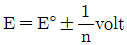
이다. - 지시약은 주로 이중 결합들이 콘주게이션(conjugated)된 유기물이다.
(정답률: 82%)
31. 일정온도에서 1.0mol의 SO3을 1.0L 반응용기에 담았다. 반응이 평형에 도달하여 다음과 같은 평형을 유지할 때, SO2의 mol 수가 0.60mol로 측정되었다. 평형상수 값은 얼마인가?
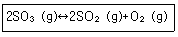
- 0.36
- 0.45
- 0.54
- 0.68
(정답률: 59%)
32. 0.1M의 Fe2+ 50mL를 0.1M의 Tl3+로 적정한다. 반응식과 각각의 표준환원전위가 다음과 같을 때 당량점에서 전위(V)는 얼마인가?
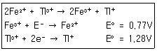
- 0.94
- 1.02
- 1.11
- 1.20
(정답률: 55%)
33. 일반적으로 널리 사용되는 산화제인 MnO4-는 산성조건에서 (1)과 같은 환원 반쪽반응이을 하며 이때 Fe3+의 환원반쪽 반응은 (2)와 같다. 두 반응이 결합하여 산화-환원반응이 일어난다면 정확한 산화-환원반응식은?
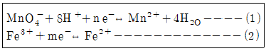
- MnO4-+Fe2++H+↔Mn2++Fe3+H2O
- MnO4-+3Fe2++4H+↔Mn2++3Fe3++2H2O
- MnO4-+5Fe2++8H+↔Mn2++5Fe3++4H2O
- MnO4-+5Fe2++8H+↔Mn2++5Fe2++4H2O
(정답률: 32%)
34. 전지의 두 전극에서 반응이 자발적으로 진행되려는 경향을 갖고 있어 외부 도체를 통하여 산화전극에서 환원전극으로 전자가 흐르는 전지 즉, 자발적인 화학반응으로부터 전기를 발생시키는 전지를 무슨 전지라 하는가?
- 전해 전지
- 표준 전지
- 자발 전지
- 갈바니 전지
(정답률: 91%)
35. 0.⑤M Fe2+ 100mL를 0.1M Ce4+로 적정하며, Pt전극과 Caloml 전극(SCE)을 이용하여 전위차를 측정하였다. 당량점에서의 두 전극의 전위차는?
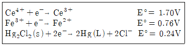
- 0.69V
- 0.99V
- 1.23V
- 1.47V
(정답률: 44%)
36. 아세트산(CH3COOH)은 약한 산으로, 산해리상수(K3)값은 다음과 같은 평형식에서 구할 수 있다. CH3COOH↔CH3COO-+H+ K3값을 나타내는 화학편형식으로 옳은 것은?
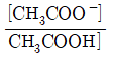
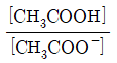
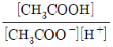
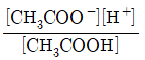
(정답률: 93%)
37. 은이온은 트리에틸렌테트라아민과 안정한 1:1 착화합물을 형성한다. 0.01M 질산은 용액 20mL를 0.⑤M 트리에틸렌테트라아민 용액 10mL에 가했을 때, 평형상태에서 은이온농도는 얼마인가? (단, 착화합물 생성반응에 대한 형성상수(Kf)는 5.0×107이다.)
- 1.34×10-10
- 1.34×10-9
- 1.34×10-8
- 1.34×10-7
(정답률: 35%)
38. EDTA 적정에 사용되는 xylenol orange와 같은 금속이온 지시약의 일반적인 특징이 아닌 것은?
- pH에 따라 색이 다소 변한다.
- 산화-환원제로서 전위(potential)에 따라 색이 다르다.
- 지시약은 EDTA 보다 약하게 금속과 결합해야만 한다.
- 금속이온과 결합하면 색깔이 변해야 한다.
(정답률: 68%)
39. 0.⑤M 용액 50mL를 제조하는데 몇 g의 AgNO3가 필요한가? (단, AgNO2:169.9g/mol이다.)
- 0.425g
- 4.25g
- 0.17g
- 1.7g
(정답률: 80%)
40. 다음 화학 반응의 E°값은 어떻게 표현되는가? Cd(s)+2Ag+↔Cd2++Ag(s) (단, 한쪽 반응식과 그에 따른 표준환원 전위(E°)는 다음과 같다.)
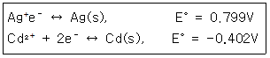
- 0.799-0.402
- 0.799+0.402
- 0.799×2+0.402
- 0.799×2-0.402
(정답률: 75%)
3과목: 기기분석I
41. 비불꽃 원자화 장치인 흑연로 원자화 분광 분석법의 장점이 아닌 것은?
- 분석비용이 싸고 분석시간이 짧다.
- 원자화 효율이 좋아 강도가 높다.
- 제한된 적은 시료를 분석할 수 있다.
- 유기물 시료를 전처리 과정 없이 분석할 수 있다.
(정답률: 52%)
42. 분석기기 측정과정에서 정보를 전기적양으로 코드화하는 방식이 아닌 것은?
- 아날로그 영역
- 파수 영역
- 티지털 영역
- 시간 영역
(정답률: 60%)
43. 모든 종류의 분석방법은 측정된 분석신호화 분석농도를 연관 짓는 과정으로 검정이 필요하다. 일반적으로 사용되는 방법과 이에 대한 설명을 연결한 것 중 잘못된 것은?
- 검정곡선-정확한 농도의 분석물을 포함하고 있는 몇 개의 표준용액을 넣고 검정곡선을 얻어 사용한다.
- 표준물 첨가법-매트릭스 효과가 있을 가능성이 상당히 있는 복잡한 시료분석에 특히 유용하다.
- 내부표준물법-모든 시료, 바탕용액과 검정표준물에 일정량의 내부 표준물을 첨가하는 방식이다.
- 표준물 첨가법-대부분 형태의 표준물 첨가법에서 시료 매트릭스는 각 표준물을 첨가한 후에 변화한다
(정답률: 73%)
44. 250nm에서 A시료의 자외선 분광분석을 하고자 한다. 이 때 다음 용매 중 가장 부적합한 것은? (단, 모든 용매는 A에 대한 충분한 용해도를 갖고 있음)
- 물
- 메탄올
- 벤젠
- 에탄올
(정답률: 69%)
45. 다음 중 선 광선(line sources)에 해당하는 것은?
- Nernst 백열등
- 니크롬 선
- 글로바
- 속빈 음극등
(정답률: 57%)
46. 원자분광법에서 고체 시료를 원자화하기 위해 도입하는 방법은?
- 기체 분무기
- 글로우 방전
- 초음파 분무기
- 수소화물 생성법
(정답률: 76%)
47. 다음 [보기]에서 설명하는 적외선 광원은?
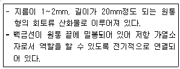
- Nernst 백열등
- 텅스텐 필라멘트등
- Globar 광원
- 수은아크등
(정답률: 62%)
48. 원자흡수분광법(AAS)에서 주로 사용되는 연료가스는 천연가스, 수소, 아세틸렌이다. 또한 산화제로서 공기, 산소, 산화이질소가 사용된다. 가장 높은 불꽃온도를 내는 연료가스와 산화제의 조합은?
- 천연가스-공기
- 수소-산소
- 아세틸렌-산화이질소
- 아세틸렌-산소
(정답률: 74%)
49. FT-IR 기기와 관련 없는 장치는?
- 광원장치
- 단색화장치
- 빛살분할기
- 갑섭계
(정답률: 72%)
50. 분산형기기와 비교한 푸리에변환 분광법의 장점에 대한 설명이 아닌 것은?
- 주어진 분리능에서 신호대 잡음비를 개선시킨다.
- 전체 간섭도를 빠른 시간 내에 기록하고 저장할 수 있다.
- 투광도의 측정 시 정확도가 아주 높다.
- 거의 일정한 스펙트럼을 얻을 수 있다.
(정답률: 52%)
51. 나트륨은 589.0nm와 589.6nm에서 강한 스펙트럼(선)을 나타낸다. 두 선을 구분하기 위해 필요한 분해능은?
- 0.6
- 491.2
- 589.3
- 982.2
(정답률: 79%)
52. 형광과 인광에 영향을 주는 변수로서 가장 거리가 먼 것은?
- pH
- 온도
- 압력
- 분자구조
(정답률: 68%)
53. 적외선(IR) 흡수분광법에서의 진동 짝지음에 대한 설명으로 틀린 것은?
- 두 신축진동에서 두 원자가 각각 단독으로 존재할 때 신축진동사이엔 센 짝지음이 일어난다.
- 짝지음 진동들이 각각 대략 같은 에너지를 가질 때 상호작용은 거의 일어나지 않는다.
- 두 개 이상의 결합에 의해 떨어져 진동할 때 상호작용은 거의 일어나지 않는다.
- 짝지음은 같은 대칭성 화학종에서 진동할 때 일어난다.
(정답률: 66%)
54. 다음 그림은 무엇을 측정하기 위한 장치의 개요도인가?
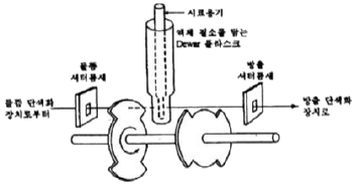
- 형광
- 화학발광
- 인광
- 라만 산란광
(정답률: 63%)
55. n→π 전이의 경우 흡수 봉우리는 용매의 극성 증가에 따라 파장이 어느 쪽으로 하는지와 이동의 명칭을 옳게 나타낸 것은?
- 짧은 파장 쪽, 적색 이동
- 짧은 파장 쪽, 청색 이동
- 긴 파장 쪽, 적색 이동
- 긴 파장 쪽, 청색 이동
(정답률: 60%)
56. 에틸알코올(C2H6O)의 1H-핵자기공명 스펙트럼에 대한 설명으로 틀린 것은?
- 화학적 이동에 의하여 세 곳에서 양성자 봉우리가 나타난다.
- 고분해능 NMR로 분석시 TMS 기준점에서 가장 가까이 나타나는 소수의 봉우리는 넷으로 갈라진다.
- 알코올의 OH 수소원자를 중수소로 치환하면 스펙트럼에서 OH에 해당되는 봉우리가 사라진다.
- 300MHz 분석 장비를 사용하면 60MHz 분석장비를 사용하였을 때보다 더 명확히 스핀-스핀 칼라짐을 관찰할 수 있다.
(정답률: 62%)
57. 자외선 분광법에서 흡수 봉우리의 차장이 가장 짧을 것으로 예측되는 분자는?
- 1.3-butadiene
- 1.4-pentadiene
- 1.3.5-hexatriene
- 1.3.5.7-octatetraene
(정답률: 48%)
58. 텅스텐관구와 LiF 분광결정(d=2.01Å)을 썼을 때 어떤 순금속의 예민한 X-선 스펙트럼이 2θ=69.36°에서 관측되었다. 형광 X-선의 파장은?
- 1.978Å
- 2.153Å
- 2.287Å
- 3.762Å
(정답률: 64%)
59. 초점거리(F)가 0.50m인 단색화장치(monochromator)안에 1mm당 2000개의 홈(blase)이 새겨진 회절발(echellettegrating)이 설치되어 있다. 이 단색화장치의 1차(first-order) 스펙트럼에 대한 역선분산능(reciprocal linear dispersion:D-1)의 값은?
- 1.0nm/mm
- 100nm/mm
- 1.0×103nm/mm
- 1.0×106nm/mm
(정답률: 40%)
60. 기기분석법에서 신호-대-잡음비를 개선하기 위하여 하드웨어와 소프트웨어 방법을 이용할 수 있는데 잡음을 줄이는 하드웨어 장치로 이용되는 방법이 아닌 것은?
- Fourier 변환기
- 아날로그 필터
- 변조기
- 동시화복조기
(정답률: 52%)
4과목: 기기분석II
61. 카드뮴전극이 1.0M Cd2+(반쪽전위 E°=-0.40V)용액에 담겨진 반쪽전위의 전위는 얼마인가?
- -0.2V
- -0.4V
- -2.0V
- -4.0V
(정답률: 79%)
62. 질량분석스펙트럼에서 동위원소 봉우리가 가장 큰 것은?
- 에탄
- 에탄올
- 아세톤
- 염화에틸
(정답률: 62%)
63. 길어야 30cm인 크로마토그래피의 분리관에 의하여 혼합물 시료로부터 성분 A를 분리하였다. 분리된 성분 A의 머무름 시간은 12분 이었으며, 분리된 봉우리 밑변의 나비가 2.4분 이었다면 단 높이는 얼마인가?
- 7.5×10-2cm
- 14×10-2cm
- 2.5cm
- 12.5cm
(정답률: 73%)
64. 유리전극에 대한 설명으로 틀린 것은?
- 이온 선택성 전극의 한 종류이다.
- 수소이온에 선택적으로 감응하는 특성이 있다.
- 복합전극은 두 개의 기준전극이 필요하다.
- 선택계수가 클수록 성능이 우수한 전극이다.
(정답률: 58%)
65. 역상 액체크로마토그래피에서 가장 먼저 용리되어 나오는 성분은?
- 벤젠
- n-헥산올
- 톨루엔
- n-헥산
(정답률: 71%)
66. 질량분석기에서 사용되는 시료도입장치가 아닌 것은?
- 직접 도입장치
- 배치식 도입장치
- 펠렛식 도입장치
- 크로마토그래피 도입장치
(정답률: 70%)
67. 가스 크로마토그래피의 전개 가스의 유속이 20mL/min이고 기록지의 속도가 5cm/min이고 봉우리 꼭지점까지의 길이가 30cm일 때 머무름 부피는?
- 100mL
- 120mL
- 140mL
- 160mL
(정답률: 82%)
68. 기체크로마토그래피와 검출기 중 불꽃이온화검출기(FID)가. 가장 유용하게 사용될 수 있는 경우는?
- 자연수 중의 유기물질 오염도 측정 시
- 유기농 채소 속의 물의 함량 측정 시
- 공기 중 이산화탄소의 함량 측정 시
- 자동차 배기가스 중 SO2의 함량 측정 시
(정답률: 64%)
69. 전도도법을 이용하여 염산을 수산화나트륨으로 적정하고자 한다. 전도도의 변화를 적정곡선으로 바르게 나타낸 것은?
- 전도도는 감소하다가 종말점 이후에는 증가한다.
- 전도도는 증가하다가 종말좀 이후에는 감소한다.
- 전도도는 감소하다가 종말점 이후에는 일정하게 유지된다.
- 전도도는 증가하다가 종말점 이후에는 일정하게 유지된다.
(정답률: 76%)
70. 전압전류법의 일종인 플라로그래피법에 사용하는 적하수은전극의 장점이 아닌 것은?
- 수소의 환원에 대한 과전압이 크다.
- 새로운 수은전극표면이 계속 생긴다.
- 재현성 있는 평균전류를 얻을 수 있다.
- 수은이 쉽게 산화되지 않아서 효과적이다.
(정답률: 84%)
71. 분자량 10,000 이상의 생체 고분자를 분리하기 위한 가장 적합한 방법은?
- 흡착크로마토그래피
- 베제크로마토그래피
- 분배크로마토그래피
- 이온교환크로마토그래피
(정답률: 80%)
72. 질량분석법에서 순수한 시료가 시료도입장치를 통해 이온화실로 도입되어 이온화된다. 분자를 기체상태 이온으로 만들 때 사용하는 장치가 아닌 것은?
- 전자충격장치(electron impact source:EI)
- 화학적 이온화장치(chemical ionization source:Cl)
- 장탈착장치(field desorption:FD)
- 이중초점 분석기(couble focusing)
(정답률: 51%)
73. 기체-고체 크로마토그래피(GSC)에 대한 설명으로 틀린 것은?
- 고페표면에 기체물질이 흡착되는 현상을 이용한다.
- 분포상수는 보통 GLC의 경우보다 적다.
- 기체-액체 컬럼에 머물지 않는 화학종을 분리하는데 유용하다.
- 충전 컬럼과 열린관 컬럼 두 가지 모두 사용된다.
(정답률: 79%)
74. 전압전류법으로 수용액 중의 무기물질을 정량하고자 할 때, 용존산소를 제거할 필요가 있다. 다음 중 적합한 방법은?
- 시료용액의 온도를 높인다.
- 불활성기체를 시료용액 속으로 불어 넣는다.
- 시료용액의 pH를 낮게 유지된다.
- 시료용액을 강하게 저어준다.
(정답률: 70%)
75. 이동상이 액체인 크로마토그래피가 아닌 것은?
- 분배 크로마토그래피
- 액체-고체 크로마토그래피
- 이온교환 크로마토그래피
- 확산 크로마토그래피
(정답률: 70%)
76. 시차주사열량법에서 중합체를 측정할 때의 열량변화와 관련이 없는 것은?
- 결정화
- 산화
- 승화
- 용융
(정답률: 67%)
77. HPLC의 검출기에 대한 설명으로 옳은 것은?
- UV 흡수 검출기는 254nm의 파장만을 사용한다.
- 굴절율 검출기는 대부분의 용질에 대해 감응하나 온도에 매우 민감하다.
- 형광검출기는 대부분의 화학종에 대해 사용이 가능하나 감도가 낮다.
- 모든 HPLC 검출기는 용액의 물리적 변화만을 감응한다.
(정답률: 73%)
78. 전자충격이온화법(EO)에서 가장 일반적으로 사용하고 있으며 얻어진 스펙트럼에 대해서 상업화된 library search가 가능한 이온화에너지 값은 얼마인가?
- 10eV
- 30eV
- 70eV
- 120eV
(정답률: 70%)
79. 가스크로마토그래피에서 비누거품 유속계를 이용하여 유속을 측정하는 방법을 옳게 설명한 것은?
- 비누거품 유속계를 유속제어기 바로 뒤에 연결하여 유속을 측정한다.
- 비누거품 유속계를 시료주입기 바로 앞에 연결하여 유속을 측정한다.
- 비누거품 유속계를 관 바로 앞에 연결하여 유속을 측정한다.
- 비누거품 유속계를 관 바로 뒤에 연결하여 유속을 측정한다.
(정답률: 55%)
80. 분자질량분석법에 사용되는 이온원의 종류 중 가장 큰 에너지의 전자를 이용하는 방법은?
- 전자 충격법
- 전기분무 이온화법
- 빠른 원자 충격법
- 열분무 이온화법
(정답률: 62%)